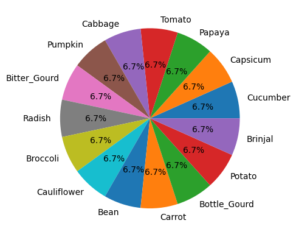
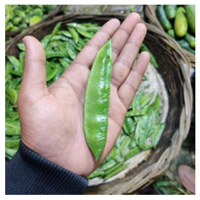

Downloading vegetable-image-dataset.zip to ./vegetable-image-dataset100%|██████████| 534M/534M [00:04<00:00, 117MB/s]Downloading vegetable-image-dataset.zip to ./vegetable-image-dataset100%|██████████| 534M/534M [00:04<00:00, 117MB/s]Total Categories in the dataset: 15
{'Cucumber': 1000, 'Capsicum': 1000, 'Papaya': 1000, 'Tomato': 1000, 'Cabbage': 1000, 'Pumpkin': 1000, 'Bitter_Gourd': 1000, 'Radish': 1000, 'Broccoli': 1000, 'Cauliflower': 1000, 'Bean': 1000, 'Carrot': 1000, 'Bottle_Gourd': 1000, 'Potato': 1000, 'Brinjal': 1000}

torch version: 2.0.1+cu118Total images in train dataset: 15000
Sample image from train dataset
Total images in train dataset: 3000
Sample image from validation_dataset
Image transformation
Shape of the image: torch.Size([3, 64, 64])
The image after transformation
(tensor([[[0.7098, 0.6980, 0.7216, ..., 0.6157, 0.6000, 0.6118],
[0.7137, 0.7020, 0.7255, ..., 0.6157, 0.5922, 0.5961],
[0.7216, 0.7098, 0.7255, ..., 0.6078, 0.5686, 0.5686],
...,
[0.7765, 0.7804, 0.8000, ..., 0.7490, 0.7922, 0.7882],
[0.7686, 0.7882, 0.8235, ..., 0.7843, 0.7882, 0.7843],
[0.7569, 0.7843, 0.8275, ..., 0.8078, 0.7843, 0.7843]],
[[0.6431, 0.6392, 0.6706, ..., 0.4431, 0.4353, 0.4353],
[0.6510, 0.6431, 0.6745, ..., 0.4392, 0.4314, 0.4314],
[0.6627, 0.6510, 0.6706, ..., 0.4314, 0.4196, 0.4196],
...,
[0.6078, 0.6039, 0.6039, ..., 0.6627, 0.7098, 0.7059],
[0.5804, 0.5804, 0.5725, ..., 0.6980, 0.7059, 0.6980],
[0.5725, 0.5686, 0.5529, ..., 0.7255, 0.6980, 0.7020]],
[[0.8235, 0.8118, 0.8431, ..., 0.4627, 0.4667, 0.4627],
[0.8275, 0.8196, 0.8471, ..., 0.4588, 0.4627, 0.4588],
[0.8392, 0.8275, 0.8431, ..., 0.4471, 0.4549, 0.4549],
...,
[0.6353, 0.6314, 0.6275, ..., 0.7647, 0.8039, 0.7961],
[0.6078, 0.6078, 0.5922, ..., 0.8000, 0.7961, 0.7804],
[0.5961, 0.5922, 0.5725, ..., 0.8235, 0.7882, 0.7765]]]), 0)
Sample imagecpu_count in machine: 2(torch.Size([32, 3, 64, 64]), torch.Size([32]))
'cuda'ResNet9(
(conv1): Sequential(
(0): Conv2d(3, 64, kernel_size=(3, 3), stride=(1, 1), padding=(1, 1))
(1): BatchNorm2d(64, eps=1e-05, momentum=0.1, affine=True, track_running_stats=True)
(2): ReLU(inplace=True)
)
(conv2): Sequential(
(0): Conv2d(64, 128, kernel_size=(3, 3), stride=(1, 1), padding=(1, 1))
(1): BatchNorm2d(128, eps=1e-05, momentum=0.1, affine=True, track_running_stats=True)
(2): ReLU(inplace=True)
(3): MaxPool2d(kernel_size=2, stride=2, padding=0, dilation=1, ceil_mode=False)
)
(res1): Sequential(
(0): Sequential(
(0): Conv2d(128, 128, kernel_size=(3, 3), stride=(1, 1), padding=(1, 1))
(1): BatchNorm2d(128, eps=1e-05, momentum=0.1, affine=True, track_running_stats=True)
(2): ReLU(inplace=True)
)
(1): Sequential(
(0): Conv2d(128, 128, kernel_size=(3, 3), stride=(1, 1), padding=(1, 1))
(1): BatchNorm2d(128, eps=1e-05, momentum=0.1, affine=True, track_running_stats=True)
(2): ReLU(inplace=True)
)
)
(conv3): Sequential(
(0): Conv2d(128, 256, kernel_size=(3, 3), stride=(1, 1), padding=(1, 1))
(1): BatchNorm2d(256, eps=1e-05, momentum=0.1, affine=True, track_running_stats=True)
(2): ReLU(inplace=True)
(3): MaxPool2d(kernel_size=2, stride=2, padding=0, dilation=1, ceil_mode=False)
)
(conv4): Sequential(
(0): Conv2d(256, 512, kernel_size=(3, 3), stride=(1, 1), padding=(1, 1))
(1): BatchNorm2d(512, eps=1e-05, momentum=0.1, affine=True, track_running_stats=True)
(2): ReLU(inplace=True)
(3): MaxPool2d(kernel_size=2, stride=2, padding=0, dilation=1, ceil_mode=False)
)
(res2): Sequential(
(0): Sequential(
(0): Conv2d(512, 512, kernel_size=(3, 3), stride=(1, 1), padding=(1, 1))
(1): BatchNorm2d(512, eps=1e-05, momentum=0.1, affine=True, track_running_stats=True)
(2): ReLU(inplace=True)
)
(1): Sequential(
(0): Conv2d(512, 512, kernel_size=(3, 3), stride=(1, 1), padding=(1, 1))
(1): BatchNorm2d(512, eps=1e-05, momentum=0.1, affine=True, track_running_stats=True)
(2): ReLU(inplace=True)
)
)
(classifier): Sequential(
(0): AdaptiveAvgPool2d(output_size=1)
(1): Flatten(start_dim=1, end_dim=-1)
(2): Dropout(p=0.2, inplace=False)
(3): Linear(in_features=512, out_features=15, bias=True)
)
)Looking in indexes: https://pypi.org/simple, https://us-python.pkg.dev/colab-wheels/public/simple/
Collecting torchinfo
Downloading torchinfo-1.8.0-py3-none-any.whl (23 kB)
Installing collected packages: torchinfo
Successfully installed torchinfo-1.8.0==========================================================================================
Layer (type:depth-idx) Output Shape Param #
==========================================================================================
ResNet9 [1, 15] --
├─Sequential: 1-1 [1, 64, 64, 64] --
│ └─Conv2d: 2-1 [1, 64, 64, 64] 1,792
│ └─BatchNorm2d: 2-2 [1, 64, 64, 64] 128
│ └─ReLU: 2-3 [1, 64, 64, 64] --
├─Sequential: 1-2 [1, 128, 32, 32] --
│ └─Conv2d: 2-4 [1, 128, 64, 64] 73,856
│ └─BatchNorm2d: 2-5 [1, 128, 64, 64] 256
│ └─ReLU: 2-6 [1, 128, 64, 64] --
│ └─MaxPool2d: 2-7 [1, 128, 32, 32] --
├─Sequential: 1-3 [1, 128, 32, 32] --
│ └─Sequential: 2-8 [1, 128, 32, 32] --
│ │ └─Conv2d: 3-1 [1, 128, 32, 32] 147,584
│ │ └─BatchNorm2d: 3-2 [1, 128, 32, 32] 256
│ │ └─ReLU: 3-3 [1, 128, 32, 32] --
│ └─Sequential: 2-9 [1, 128, 32, 32] --
│ │ └─Conv2d: 3-4 [1, 128, 32, 32] 147,584
│ │ └─BatchNorm2d: 3-5 [1, 128, 32, 32] 256
│ │ └─ReLU: 3-6 [1, 128, 32, 32] --
├─Sequential: 1-4 [1, 256, 16, 16] --
│ └─Conv2d: 2-10 [1, 256, 32, 32] 295,168
│ └─BatchNorm2d: 2-11 [1, 256, 32, 32] 512
│ └─ReLU: 2-12 [1, 256, 32, 32] --
│ └─MaxPool2d: 2-13 [1, 256, 16, 16] --
├─Sequential: 1-5 [1, 512, 8, 8] --
│ └─Conv2d: 2-14 [1, 512, 16, 16] 1,180,160
│ └─BatchNorm2d: 2-15 [1, 512, 16, 16] 1,024
│ └─ReLU: 2-16 [1, 512, 16, 16] --
│ └─MaxPool2d: 2-17 [1, 512, 8, 8] --
├─Sequential: 1-6 [1, 512, 8, 8] --
│ └─Sequential: 2-18 [1, 512, 8, 8] --
│ │ └─Conv2d: 3-7 [1, 512, 8, 8] 2,359,808
│ │ └─BatchNorm2d: 3-8 [1, 512, 8, 8] 1,024
│ │ └─ReLU: 3-9 [1, 512, 8, 8] --
│ └─Sequential: 2-19 [1, 512, 8, 8] --
│ │ └─Conv2d: 3-10 [1, 512, 8, 8] 2,359,808
│ │ └─BatchNorm2d: 3-11 [1, 512, 8, 8] 1,024
│ │ └─ReLU: 3-12 [1, 512, 8, 8] --
├─Sequential: 1-7 [1, 15] --
│ └─AdaptiveAvgPool2d: 2-20 [1, 512, 1, 1] --
│ └─Flatten: 2-21 [1, 512] --
│ └─Dropout: 2-22 [1, 512] --
│ └─Linear: 2-23 [1, 15] 7,695
==========================================================================================
Total params: 6,577,935
Trainable params: 6,577,935
Non-trainable params: 0
Total mult-adds (G): 1.52
==========================================================================================
Input size (MB): 0.05
Forward/backward pass size (MB): 24.12
Params size (MB): 26.31
Estimated Total Size (MB): 50.48
==========================================================================================image shape: torch.Size([32, 3, 64, 64])
images device: cpu
preds.shape torch.Size([32, 15])[{'validation_loss': 2.708531379699707,
'validation_accuracy': 0.06648936122655869}]
Target: Bean
Prediction: Bean
Looking in indexes: https://pypi.org/simple, https://us-python.pkg.dev/colab-wheels/public/simple/
Collecting onnx
Downloading onnx-1.14.0-cp310-cp310-manylinux_2_17_x86_64.manylinux2014_x86_64.whl (14.6 MB)
━━━━━━━━━━━━━━━━━━━━━━━━━━━━━━━━━━━━━━━━ 14.6/14.6 MB 86.8 MB/s eta 0:00:00
Requirement already satisfied: numpy in /usr/local/lib/python3.10/dist-packages (from onnx) (1.22.4)
Requirement already satisfied: protobuf>=3.20.2 in /usr/local/lib/python3.10/dist-packages (from onnx) (3.20.3)
Requirement already satisfied: typing-extensions>=3.6.2.1 in /usr/local/lib/python3.10/dist-packages (from onnx) (4.5.0)
Installing collected packages: onnx
Successfully installed onnx-1.14.0============= Diagnostic Run torch.onnx.export version 2.0.1+cu118 =============
verbose: False, log level: Level.ERROR
======================= 0 NONE 0 NOTE 0 WARNING 0 ERROR ========================
━━━━━━━━━━━━━━━━━━━━━━━━━━━━━━━━━━━━━━━━ 0.0/5.9 MB ? eta -:--:-- ━━━━━━━━━━━━━━━━━━━━━━━━━━━━━━━━━━━━━━━╺ 5.8/5.9 MB 174.3 MB/s eta 0:00:01 ━━━━━━━━━━━━━━━━━━━━━━━━━━━━━━━━━━━━━━━━ 5.9/5.9 MB 93.9 MB/s eta 0:00:00
━━━━━━━━━━━━━━━━━━━━━━━━━━━━━━━━━━━━━━━━ 46.0/46.0 kB 5.6 MB/s eta 0:00:00
━━━━━━━━━━━━━━━━━━━━━━━━━━━━━━━━━━━━━━━━ 86.8/86.8 kB 11.2 MB/s eta 0:00:00Predicted class: Carrot
Predicted class: Pumpkin